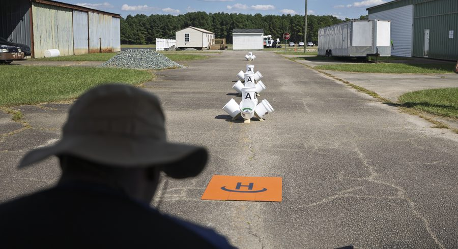

Operator Training
Initial training for UAS and detection systems, delivered at your site or range and coordinated with the manufacturer where the OEM requires it.
Every engagement starts with a written scope and ends with a deliverable you can put in a program or contract file. We train operators to run what they field, and we advise agencies, programs, and manufacturers on how to define, plan, and buy it.

Initial training for UAS and detection systems, delivered at your site or range and coordinated with the manufacturer where the OEM requires it.
Recurring proficiency for operators already fielded: flight hours, scenario drills, and evaluated practical events, so skills hold between deployments and turnover.
Mission, site, constraints, authority, and interfaces turned into a requirement a program office can act on.
CONOPS, policy, SOPs, training pipeline, Part 107 and waiver pathways, data handling, and the sustainment plan for a UAS program.
Authority mapping, threat characterization, layered architecture, and operations plans for a detection or counter-UAS program. Counter-UAS
Covered-entity analysis, bill of materials review, and Blue UAS status by configuration, written for a contract file.
Market research, sources sought responses, set-aside strategy, and acquisition planning.
Fielding plans, site coordination, acceptance criteria, and the handoff from delivery to operations.
What compliance requires, how to structure a product line for federal buyers, and how to build a channel that does not disintermediate you.
Export control posture (ITAR, EAR, FMS), NDAA Section 848 and Buy American positioning, SDVOSB channel structure, teaming agreements, and a scoped introduction program for allied manufacturers entering U.S. federal and critical-infrastructure markets.
Every engagement runs on a one-page Statement of Work that names the deliverable, the timeline, and the fee before work begins. We start with a short scoping call to confirm fit and define the scope. Advisory work begins under a signed Statement of Work. The ranges below are typical; each engagement is quoted against its own scope.
A named deliverable against a written scope: a configuration-specific NDAA and ASDA compliance analysis, a sources-sought response, a federal or U.S. market entry plan, a C-UAS program design, or a quote package built against a solicitation.
Ongoing advisory for a UAS, C-UAS, or sensor manufacturer entering or expanding in U.S. federal, public safety, and critical-infrastructure markets: capture planning, compliance support, channel strategy, and qualified introductions under a signed agreement.
Site surveys, demonstration coordination and support, operator training delivery, and multi-vendor evaluations on your installation or at a range.

Field time is part of validating the requirement. We put candidate systems in front of the operators who will run them, in their own conditions, so the evaluation rests on what they observed rather than on a brochure.
We coordinate the manufacturer, the site, and the agenda, and the findings feed directly into architecture and selection.
Request Training or a Field EvaluationSend the requirement and the timeframe. We acknowledge inquiries within one business day and confirm next steps after reviewing the requirement.